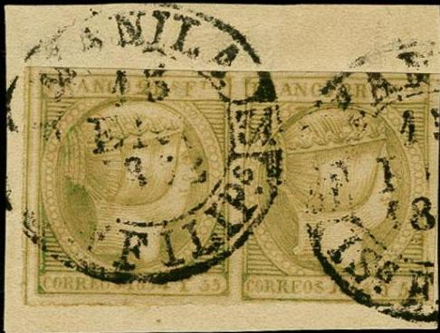
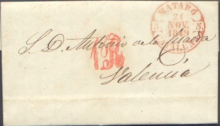
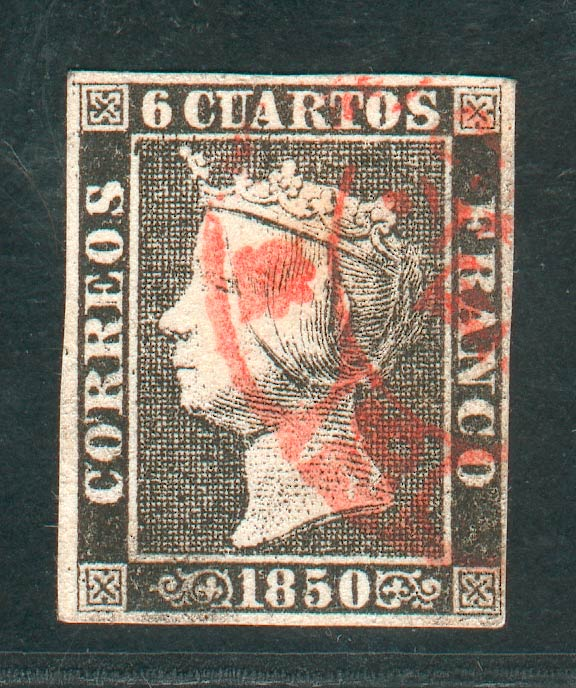
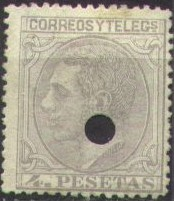

(Red and blue Baeza cancel from Cuba and from Manila, Phillipines)
España - Matasellos
Note: on my website many of the
pictures can not be seen! They are of course present in the
catalogue;
contact me if you want to purchase it.
Remark: besides the cancels mentionned here, other less well known cancels exist. Also pencancels or 'matasellado a pluma' occur sometimes.


(Red and blue Baeza cancel from Cuba and from Manila,
Phillipines)

(Baeza cancel on a 6 c 1850 stamp)
A cancel from pre-stamp times that was used for a short period on the first issues of Spain. It also seems to have been used occasionally in 1869 (Frias) and 1870 (Pontevedra). Later, with the introduction of the 'Arana' cancel, it was custom to place the 'Arana' cancel on a stamp and the 'Baeza' cancel elsewhere on the letter containing the name of the city and date.
The Arana cancel was first used in Madrid on 22 February 1850. It was introduced in the rest of the country a few days later. There is a hole in the middle to prevent the face of the queen being 'smudged' by the cancel. Normally it is in black, though during the first period of its use red, blue and green are known to be used (in 1851 the official prescribed colour was black). This cancel was mainly used during the period 1850-1851. It seems to have been used occasionally in 1869 and 1870.

(Forged stamp with forged cancel? The Arana doesn't have any
arrows)
The 'Arana' cancels could sometimes be removed from the stamps and the stamps could be reused. To prevent this from happening the 'Arana' was replaced by a heavier cancel: the 'Parilla', an oval with horizontal lines in it. Still people managed to remove this cancel and it was therefore prescribed to use oily ink.
Very oily cancel:
(Very oily cancel, reduced size)
(Cancel on letter, reduced size)
The 'Parilla' was normally used in black ink, in the intial period of its use it can also be found in blue or red (quite rare). It was used upto 1859 and occasionally around 1872-73 it seems to have been reused again for unknown reasons.
There are also cancels that closely resemble the 'Parilla' introduced from 1855 onwards, such as a lozenge with 9 parallel lines or 7 parallel lines, The lines can be thin or thick, example:

'Rejilla' cancel, or lozenge constiting of parallel lines


On 16 September 1853 a new cancel was introduced with two circles, the name of the city on top, the province below and a date in the middle. Sometimes the name of the city was indicated with a number or with a star (Barcelona). The departure cancels were made in red and the arrival cancels were made in blue. Later, from1855 onwards this cancel can also be found in black.
Rueda Nr 3 cancel


This cancel came into use on 10 October 1858, it looks like a wheel. In the center a number, representing a city is printed, this number is repeated at the four sides of the cancel. Sixty-three towns used this cancel. Normally this cancel is in black, though number 59 is also known to exist in the colour blue. The cancels of the smaller cities are of course rarer than those of the big cities. The numbers used in the cities are:
| 1 | Madrid | 18 | Avila | 35 | Orense | 52 | Benavente | |||
| 2 | Barcelona | 19 | Badagoz | 36 | Palencia | 53 | Ecija | |||
| 3 | Cadiz | 20 | Bilbao | 37 | Palma de Mallorca | 54 | Manzanares | |||
| 4 | Coruna | 21 | Burgo | 38 | Pamplona | 55 | Medina del Campo | |||
| 5 | Granada | 22 | Caceres | 39 | Pontevedra | 56 | Santiago de Compostello | |||
| 6 | Malaga | 23 | Castillon | 40 | Salamanca | 57 | Talavera de Reina | |||
| 7 | Sevilla | 24 | Ciudad Real | 41 | San Sebastian | 58 | Tarancon | |||
| 8 | Valencia | 25 | Cuenca | 42 | Santa Cruz de Tenerife | 59 | Trujillo | |||
| 9 | Alicante | 26 | Gerona | 43 | Santander | 60 | Vigo | |||
| 10 | Cordoba | 27 | Guadalagara | 44 | Segovia | 61 | La Junquera | |||
| 11 | Murcia | 28 | Huelva | 45 | Soria | 62 | Tuy | |||
| 12 | Oviedo | 29 | Huesca | 46 | Tarragona | 63 | San Roque | |||
| 13 | Toledo | 30 | Jean | 47 | Teruel | |||||
| 14 | Valladolid | 31 | Leon | 48 | Vitoria | |||||
| 15 | Zaragossa | 32 | Lerida | 49 | Zamora | |||||
| 16 | Albacete | 33 | Logrono | 50 | Irun | |||||
| 17 | Almeria | 34 | Lugo | 51 | Bailen |
This cancel was used upto 1873.

A modified '20' Rueda cancel?
A smaller double ring cancel (diameter 20 mm) was introduced in 1857. The letters are also smaller, the date is always slanting backwards. It is almost always in black and was used upto 1873.
This cancel resembles the 'Parilla' cancel, but there is now a number in center. It was intended to replace the 'Rueda Carilla' cancels. The numbers 1, 2, 5 and 8 can be found quite frequently. It is used upto 1869 (however, the shown 50 m stamp is from 1870!).

Reduced size

I've been told that the above cancels are cancels from Madrid. I have no further information.
Mute cancels of the 1880's
A cloverleaf cancel of the 1880's
Remainder of stamps were cancelled with horizontal bars and sold to stamp dealers:
A punched hole was used as a telegraphic cancel, stamps cancelled like this are usually worth much less than postally used stamps, examples:

Stamps - Briefmarken - Timbres-Poste - Postzegels - Francobolli - Estampillas


{kind=link}
{kind=link}
{kind=link}
{kind=link}
{kind=link}
{kind=link}
{kind=link}
{kind=link}